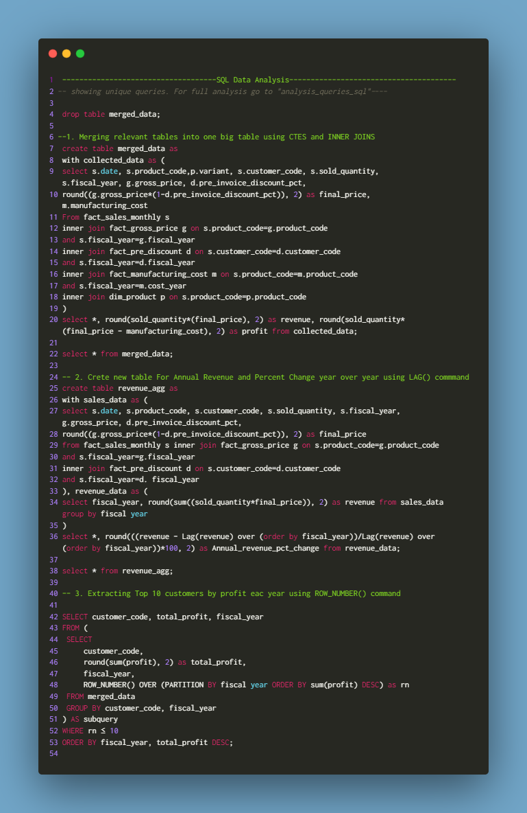

Atliq Hardware Sales Analysis
Objective
To analyze the sales data for a period of five years, from 2018 to 2022, and address the following key questions:
- Determine the annual percent change in sales from 2018 to 2022.
- Explore the sales trends by month within a given year.
- Identify the top 10 markets based on revenue in any given year.
- Analyze the percentage breakdown of revenue generated by different platforms, product categories, and channels.
Process
- Data Collection: Dataset is available on Kaggle
- Data Understanding and Selection: The dataset contains six tables:
- dim_customer: contains customer-related data
- dim_product: contains product-related data
- fact_gross_price: contains gross price information for each product
- fact_manufacturing_cost: contains the cost incurred in the production of each product
- fact_pre_invoice_deductions: contains pre-invoice deductions information for each product
- fact_sales_monthly: contains monthly sales data for each product
- Data Cleaning:
- Check duplicates and null values to ensure data accuracy
- Format correct data type for each column
- Exploratory Data Analysis (EDA): EDA techniques were applied to gain an initial understanding of the data, and detect any data quality issues using SQL. Following are some of the SQL queries used:-
- Data Visualization: Dashboard and Insights
- Create KPI's for revenue, profit, annnual percent change, quantity sold, total customers
- Create a line chart for sales trend by month
- Create a bar chart to identify the top 10 markets by revenue in any given year
- Create doughnut charts for percentage breakdown of revenue generated by different platforms, product categories, and channels
